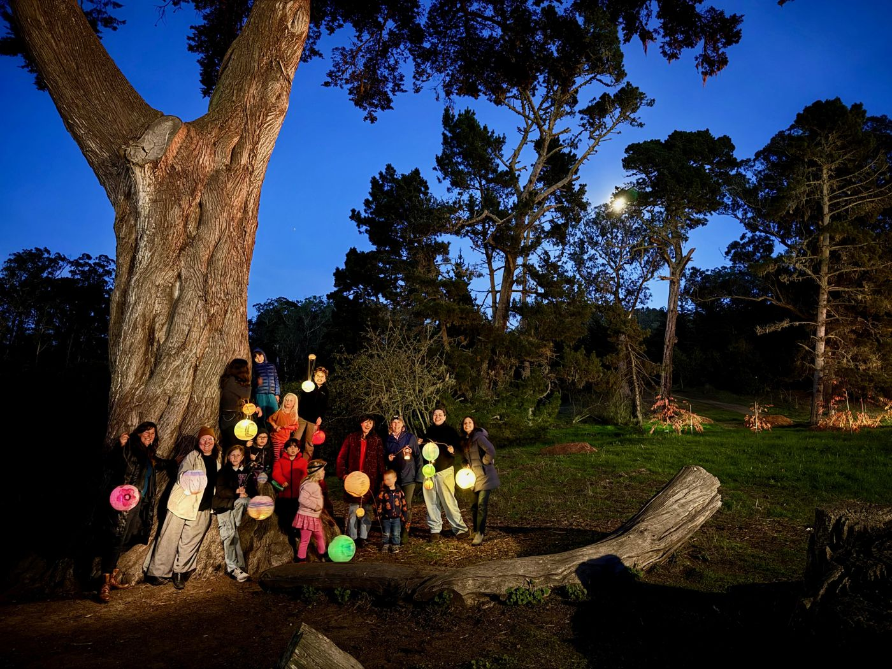
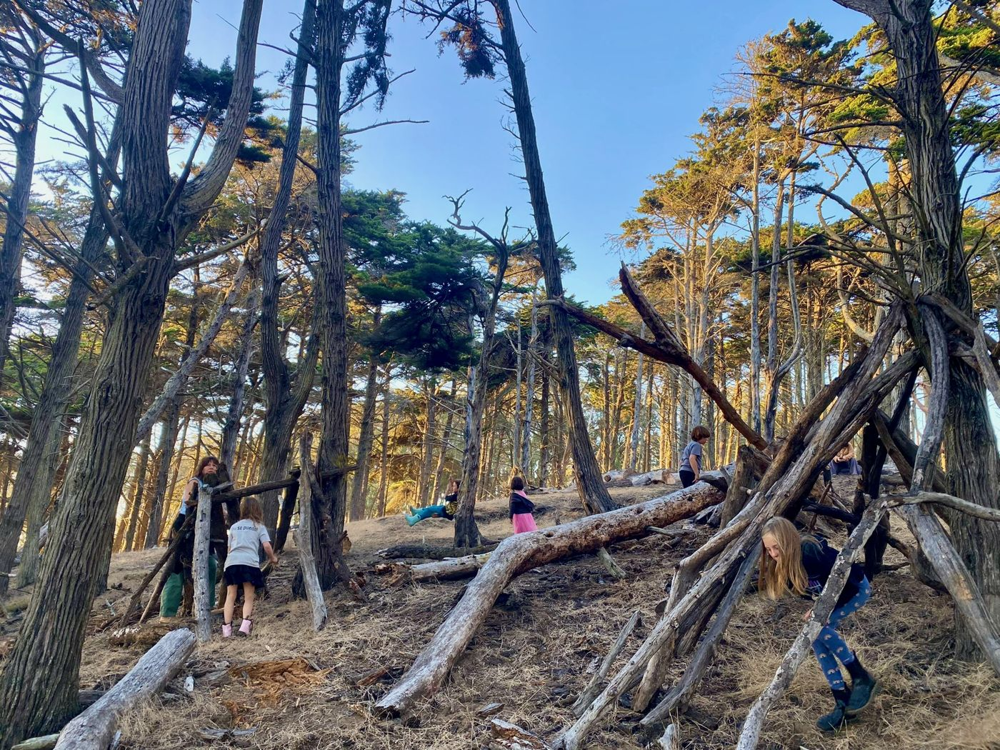
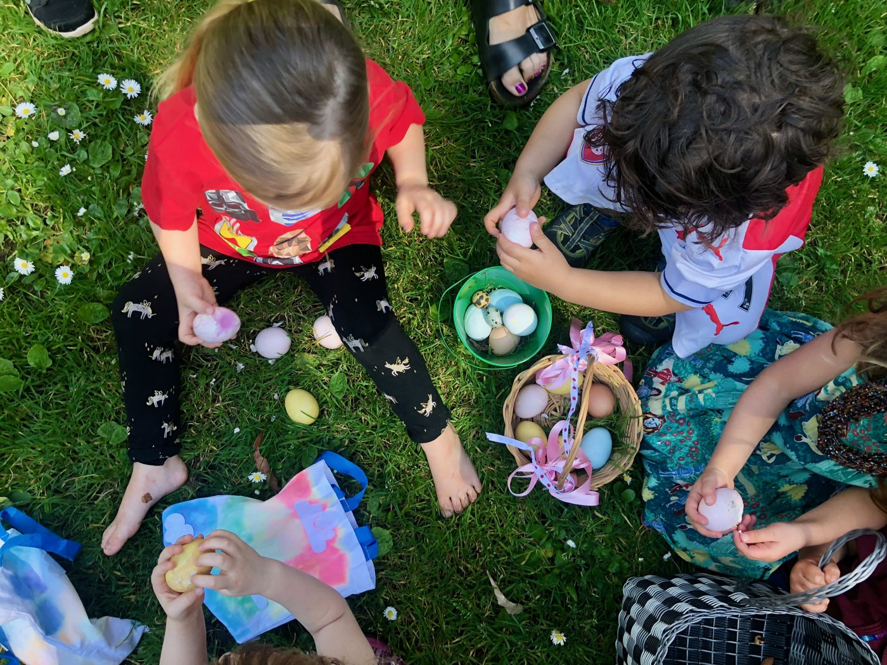
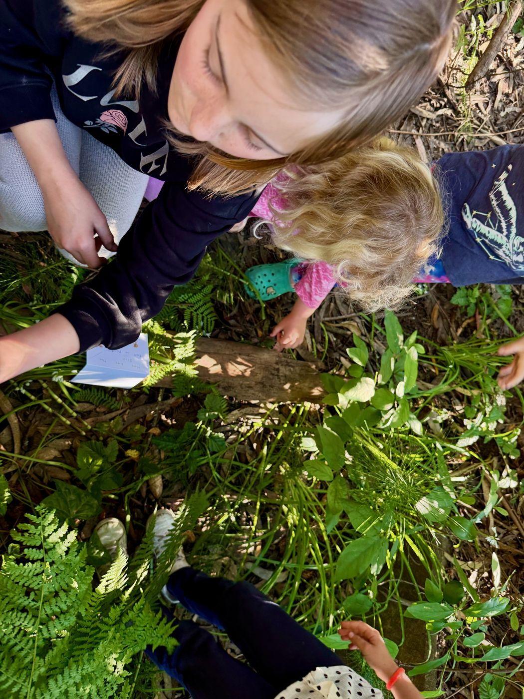
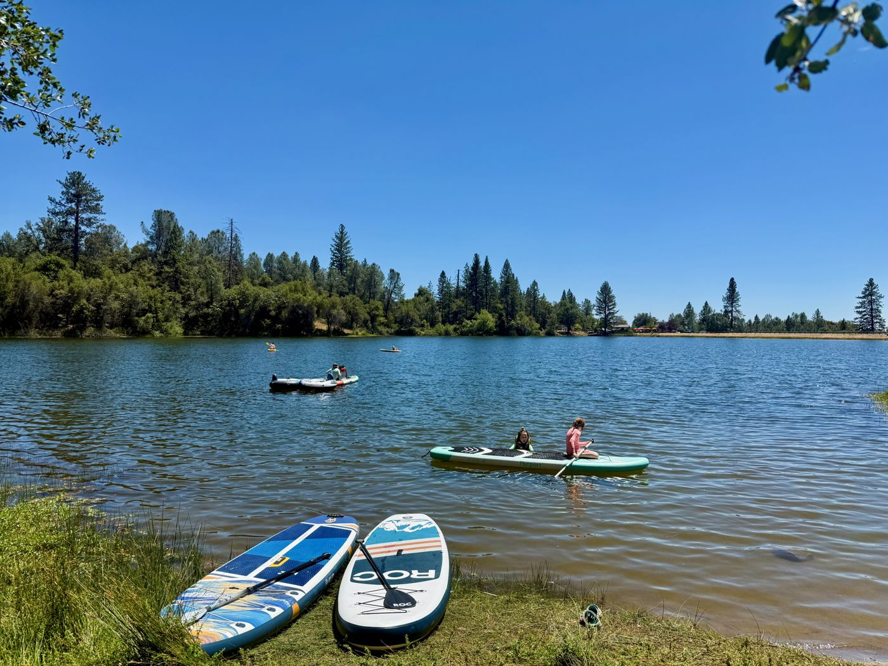
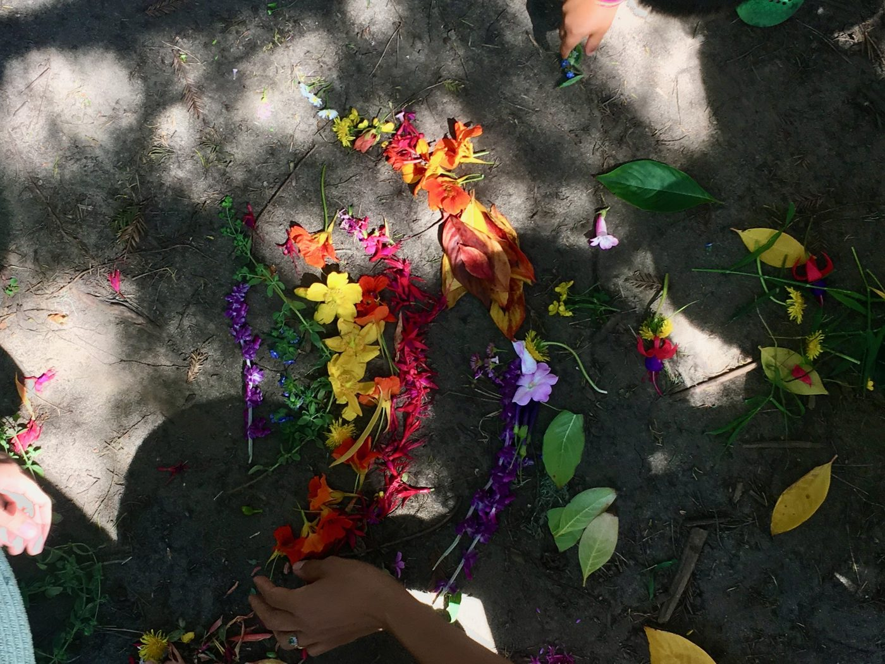

Wild Roots
A nature play group for mixed-age kids, from about 6 months to 12 years old, that has met every week since 2015. We share responsibility, look out for each other's kids, and support each other as parents.
- Helped co-found Wild Roots Forest School, a parent-run co-op preschool that ran for five years. Families interviewed and hired the teacher.
- Helped write community standards grounded in social emotional learning and social justice





